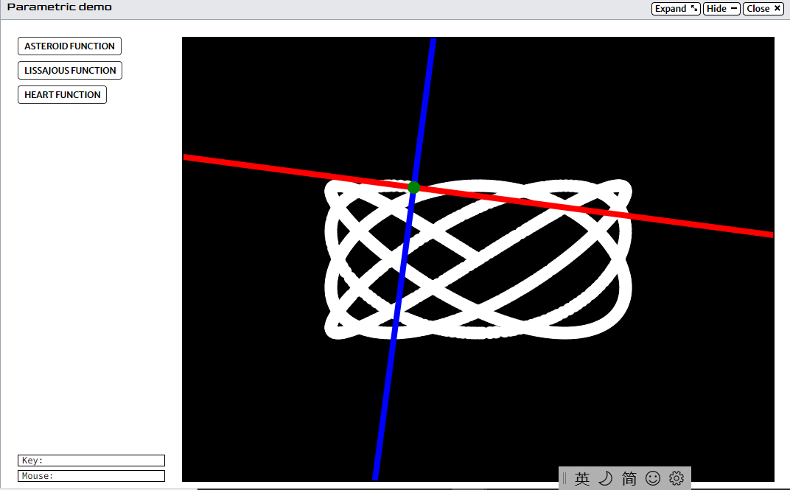

This Website
I was given a project to make a website. To make this website, I had to learn some basic HTML, CSS and Javascript and how they intereacted. This project improved my understanding of how websites are stuctured and how they function.

I was given a project to make a website. To make this website, I had to learn some basic HTML, CSS and Javascript and how they intereacted. This project improved my understanding of how websites are stuctured and how they function.
For my final project in CS11, I programmed a random number generator. The program generates a sequence of random number through two different methods. Then it takes those two two sequences of numbers and plots them on two separate graphs so it's easy to interpret visually.

I had a project to demonstrate the connection between calculus and programming. I had to draw various shapes and patterns using parametric functions in Python. After I programmed how they were going to be drawn, I used some calculus concepts to figure out the equations of the tangent and normal lines. Then I drew the tangent and normal lines as well.
Helped teachers and younger student with technology. Troubleshooted issues and communicated with those around me